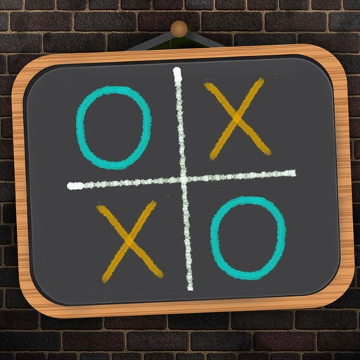

The game is to be played between two people. One of the player chooses ‘O’ and the other ‘X’ to mark their respective cells.
The game starts with one of the players and the game ends when one of the players has one whole row/ column/ diagonal filled with his/her respective character (‘O’ or ‘X’).
If no one wins, then the game is said to be draw.

If you're going first, then the best move you can make is to move into the center.
This will maximize your chances of winning since you'll be able to create a row of three "X"s or "O"s in more combinations this way than if you chose a different square.
After the first player goes, then the second player should put down his symbol, which will be different from the symbol of the first player.
The second player can either try to block the first player from creating a row of three or focus on creating their row of three. Ideally, the player can do both.
The first player to draw three of their symbols in a row, whether it is horizontal, vertical, or diagonal, has won tic-tac-toe.
However, if both players are playing with optimal strategy, then there's a good chance that no one will win because you will have blocked all of each other's opportunities
to create a row of three.
Contrary to popular belief, tic-tac-toe isn't purely a game of chance.
Some strategies can help you optimize your skills and to become an expert tic-tac-toe player.
If you keep playing, you'll soon learn all of the tricks to make sure you win every time -- or, at least, you'll learn the tricks to make sure you never lose.
It is like 0's and x's.